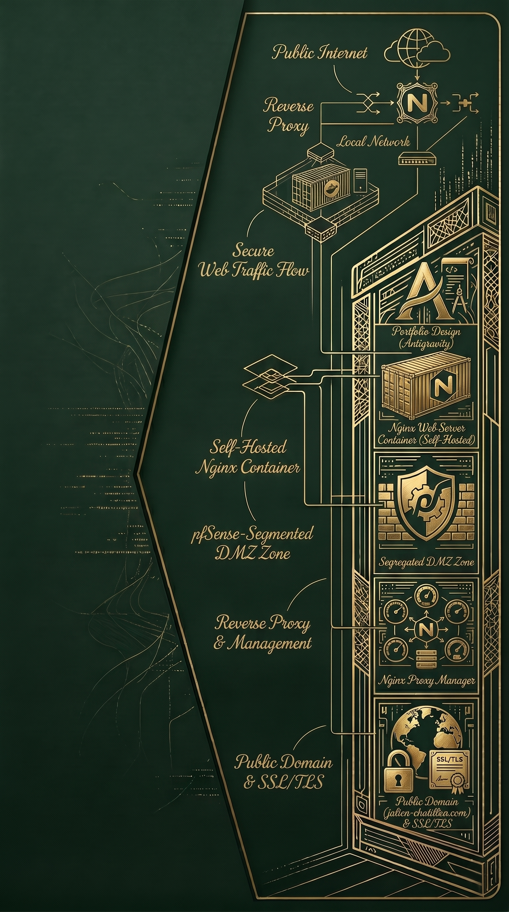

Réalisation 3 : Création et hébergement du portfolio
Contexte
Afin de mettre en valeur mes compétences et mes réalisations pour mon BTS SIO, j'ai entrepris la création complète de mon portfolio web. N'ayant aucune compétence initiale en développement, je me suis appuyé sur l'environnement Antigravity pour concevoir le design et générer le code de l'interface. Une fois le site créé, au lieu d'utiliser un hébergement cloud standard, j'ai décidé de l'auto-héberger sur ma propre infrastructure Proxmox. Cette démarche globale m'a permis de maîtriser le projet de bout en bout : de la conception visuelle jusqu'au routage sécurisé des flux internet vers mon réseau local.
Objectifs
- Concevoir l'interface visuelle et développer le site web de zéro en s'appuyant sur l'outil Antigravity.
- Auto-héberger le serveur web du portfolio (conteneur Nginx) sur l'infrastructure locale.
- Créer une zone démilitarisée (DMZ) étanche sur le pare-feu pfSense pour isoler les services publics du réseau interne (LAN).
- Déployer un Reverse Proxy (Nginx Proxy Manager) pour centraliser et rediriger le trafic HTTP/HTTPS entrant.
- Gérer un nom de domaine public (julien-chatillon.com) et sécuriser les échanges grâce à la mise en place de certificats SSL/TLS.
Technologies utilisées
Bilan
Ce projet s'est révélé être un double défi extrêmement formateur. D'une part, il m'a poussé à sortir de ma zone de confort en créant un site web complet de A à Z, malgré mon profil orienté infrastructure. D'autre part, il m'a permis de rendre ce service accessible depuis internet de manière totalement sécurisée. L'apprentissage majeur a résidé dans la configuration stricte de la DMZ sur pfSense : j'ai dû concevoir des règles de filtrage garantissant qu'en cas de compromission du serveur web, mon réseau interne (LAN) reste inaccessible. De plus, la mise en place du Reverse Proxy a grandement simplifié la gestion de mes certificats de sécurité et me donne la flexibilité d'exposer facilement de nouveaux services à l'avenir.

Compétences travaillées
Gérer le patrimoine informatique
- Vérifier les conditions de la continuity d'un service informatique
Développer la précense en ligne de l'organisation
- Référencer les services en ligne de l'oganisation et mesurer leur visibilité
- Participer à l'évolution d'un site Web exploitant les données de l'organisation
Organiser son développement professionnel
- Gérer son identité professionnelle
- Développer son projet professionnel